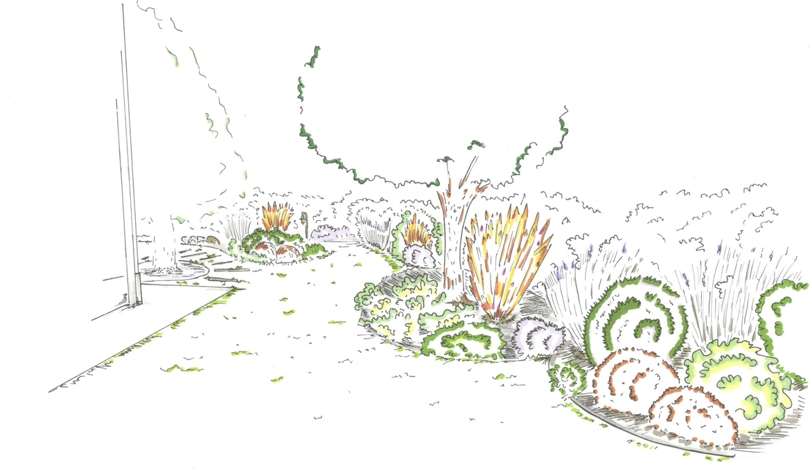

Progetti e Concorsi
Progetti e Concorsi
Progetti e Concorsi

Progetti e Concorsi
Progetti e Concorsi

Alcuni dei progetti che ho sviluppato e realizzato durante la mia carriera sono consultabili qui. I progetti si differenziano per dimensione dello spazio e tipologia:
Ciò che li accomuna è l'origine del progetto, cioè l'ispirazione. L’ispirazione è nell’arte, nei viaggi, nei ricordi e nelle influenze culturali. L’ispirazione si trasforma in idea. L’idea si converte in progetto. Il progetto, in giardino. Il giardino è un luogo in mutazione, fatto di essere viventi. I giardini possono essere di forme e dimensioni molto diverse, ma in ognuno è possibile trovare la combinazione di elementi e materiali che possono esaltarne anche il più piccolo aspetto. L’armonia tra uomo e ambiente è un aspetto fondamentale e l’obiettivo ultimo del progetto.I grandi spazi offrono una vasta gamma di opportunità per lo sviluppo di una o più idee, anche le più fantasiose. Ad esempio, è possibile realizzare specchi d’acqua insieme a dei focolai per ottenere dei giochi di luce, aree di meditazione immerse nella natura urbana, esposizioni artistiche associate alla vegetazione. Lo spazio esterno deve essere parte integrante dell'abitazione o dell'edificio e deve essere vissuto durante tutto l’anno. Un verde ben curato migliora la qualità della vita di chi lo vive e di chi l’osserva, può anche contribuire ad aumentare il profitto di un’attività commerciale.
Design armonico tra linee, materiali e natura
Ascoli Piceno, 2024/2025
Categoria: Giardini privati
Riqualificazione giardino familiare
Ascoli Piceno, 2018
Categoria: Giardini pensili
Un rifugio tra natura, tradizione e accoglienza
Castorano, 2024/2025
Categoria: Verde Business
In un piccolo spazio si nascondono grandi possibilità: l’illusione è magia. Un ambiente piccolo può offrire grandi vantaggi, perché crea un’atmosfera intima e presenta ottime possibilità di personalizzazione, tramite i colori e le forme. Con micro ambienti si intendono:
Riqualificazione giardino familiare
Ascoli Piceno, 2019
Categoria: Giardini privati
Geometrie armoniose e natura scolpita in uno spazio intimo
Grottammare, 2024
Categoria: Giardini privati
Studio composizione floreale terrazzo
Pescara, 2019
Categoria: Terrazzi e balconi
I concorsi sono sempre opportunità di crescita e formazione. La partecipazione consente di esercitare una sana e giusta competizione che permette di evolversi professionalmente.

Concorso Balconi per Roma
Roma, 14-21/04/2013
Festival del Verde e del Paesaggio di Roma
Realizzato in collaborazione con il Paesaggista Matteo Annovi

Il giardino mediterraneo del XXI sec.
Massignano, 2024
Un piccolo giardino mediterraneo, tra biodiversità e cambiamento

I Giardini di Myplant & Garden
Bando per il concorso Creativo Anno 2015
In collaborazione con l'Arch. Sara Nespeca


 >
>
 >
>